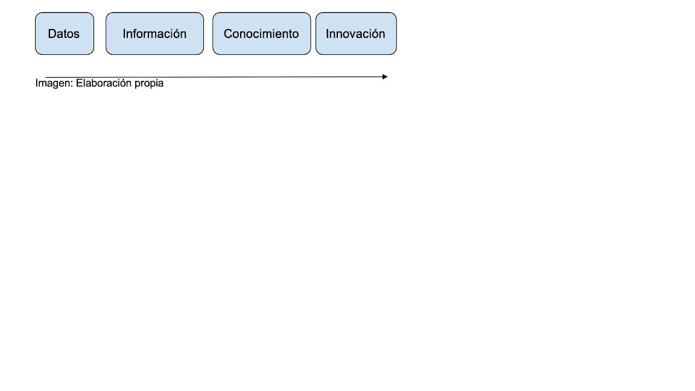

Actualmente se cuenta con amplia literatura sobre la Transformación Digital (TD), sin embargo, falta un marco sobre su naturaleza e implicaciones en las Instituciones de Educación Superior. La TD en general se define como un proceso que busca mejorar a la organización, desencadenando cambios significativos en sus características, a través de la combinación de información, cómputo y tecnologías de conectividad. Fitzgerald et al. (2014) define la TD como el uso de las nuevas tecnologías digitales, por ejemplo: redes sociales, dispositivos móviles, análisis de datos, inteligencia artificial entre otros. El uso de las tecnologías digitales permite mejorar la experiencia del cliente, optimizar las operaciones o incluso crear nuevos modelos de negocio. Liu et al. (2011) argumentan que la TD es una transformación organizacional que integra tecnologías digitales y procesos de negocios en una economía digital. Por otro lado, Singh y Hess (2017) comentan que el término transformación, en lugar de el término cambio, enfatiza que la TD de una organización va más allá del pensamiento funcional y considera de manera integral la totalidad de las actividades a considerarse para aprovechar las oportunidades o enfrentar las amenazas que se derivan de las tecnologías digitales. Rogers (2016) dice que la TD no se trata principalmente de tecnología, sino de estrategia, lo que significa que los equipos de liderazgo deben encontrar formas de capitalizar las nuevas e inesperados innovaciones de modelos de negocio que optimizan las soluciones a las necesidades de los clientes y mejoran su experiencia. El enfoque de la Transformación Digital es sobre como ayuda a las IES a ir evolucionando de los datos y convertirlos en información, como la información ayuda a la creación de una base de conocimiento en base a las experiencias de causa efecto de la toma de decisiones, y por último como ese conocimiento lleva a la empresa a transformarse a través de la búsqueda de la innovación, ver Imagen.
Este enfoque está relacionado con la misma teoría de los sistemas de información donde evoluciona desde los sistemas transaccionales (por ejemplo puntos de venta), pasando por los sistemas de apoyo a la toma de decisiones y hasta los sistemas de información estratégicos (Bharadwaj, et al., 2013; Piccinini, et al., 2015) .
La TD, vista a nivel macroeconómico, engloba los cambios que se llevan a cabo en la sociedad y las industrias por el uso de tecnologías digitales (Agarwal, et al., 2010; Majchrzak, et al., 2016). Desde un punto de vista microeconómico, se refiere a las formas que las organizaciones buscan para innovar con las tecnologías digitales ideando estrategias que adoptan la TD y llevan a un mejor desempeño operacional (Hess, et al., 2016).
Investigaciones recientes han contribuido al entendimiento del fenómeno de la TD. Uno de los principales hallazgos en la investigación de las Tecnologías de Información que habilitan la TD es que la tecnología solo es una de las variables a manipular para mantener a las organizaciones competitivas en el mundo digital. Otras variables serian la estrategia (Bharadwaj et al., 2013), la cual lleva a cambios en la organización, cambios en estructura (Berman, 2012), procesos (Badescu & Garcés-Ayerbe, 2009), y cultura (Roth et al., 2017). Dichos cambios son requeridos para producir o aumentar la capacidad de generar nuevos caminos para la creación de valor (Mustafa, 2015).
La Transformación Digital (TD) está influenciando profundamente en todas las industrias incluyendo la educación superior. Además, la TD se ha convertido en un paradigma en las organizaciones para lograr ventajas competitivas. Este enfoque de TD sugiere una evolución continua de las Instituciones de Educación Superior (IES), principalmente del lugar que ocupan los departamentos de Tecnologías de Información (TI), dentro de estas. Una de las principales características de la TD es la interacción entre la estrategia y la tecnología en búsqueda de lograr adaptarse al contexto cambiante que vive la organización (Petkovics, 2018).
Agarwal, R., Gao, G., DesRoches, C. & Jha, A. K. (2010). Research commentary—the digital transformation of healthcare: Current status and the road ahead. Information Systems Research, 21(4), 796–809.
Badescu, M. & Garcés-Ayerbe, C. (2009). The impact of information technologies on firm productivity: Empirical evidence from Spain. Technovation, 29 (2), pp. 122-129.
Berman, S. (2012). Digital transformation: opportunities to create new business models. Strategy & Leadership, 40 (2), pp. 16-24.
Bharadwaj, A., El Sawy, O. A., Pavlou, P. A. & Venkatraman, N. (2013). Digital business strategy: Toward a next generation of insights. MIS quarterly, 471–482.
Fitzgerald, M., Kruschwitz, N., Bonnet, D. & Welch, M. (2014). Embracing digital technology: A new strategic imperative. MIT sloan management review, 55(2), 1.
Hess, T., Matt, C., Benlian, A. & Wiesböck, F. (2016). Options for formulating a digital transformation strategy. MIS Quarterly Executive, 15(2).
Liu, D.-Y., Chen, S.-W. & Chou, T.-C. (2011). Resource fit in digital transformation. Management Decision.
Majchrzak, A., Markus, M. L. & Wareham, J. (2016). Designing for digital transformation: lessons for information systems research from the study of ICT and societal challenges. MIS quarterly, 40(2), 267–277.
Mustafa, R. (2015). Business model innovation. Journal of Strategy and Management, 8 (4), pp. 342-367.
Petkovics, I. (2018). Digital transformation in higher education. Journal of Applied Technical and Educational Sciences, 8(4), 77-89.
Piccinini, E., Gregory, R. W. & Kolbe, L. M. (2015). Changes in the producer - consumer relationship - towards digital transformation. Changes, 3(4), 1634–1648.
Rogers, D. L. (2016). The digital transformation playbook: Rethink your business for the digital age. Columbia University Press.
Roth, A., Dumbach, M., Schliffka, B. & Möslein, K. (2017). Successful management of diverse corporate innovation communities. Journal of Strategy and Management, 10 (1), pp. 2-18.
Singh, A. & Hess, T. (2017). How chief digital officers promote the digital transformation of their companies. MIS Quarterly Executive, 16 (1).
Este Recurso Educativo Abierto es un producto del Quinto Laboratorio de Innovación Social “Emprendimiento Educativo”, convocado por la Cátedra UNESCO Movimiento Educativo Abierto para América Latina, el Cuerpo Académico de Tecnologías de Información y Comunicación en la Educación del Instituto de Investigación y Desarrollo Educativo de la Universidad Autónoma de Baja California y la Junta Directiva de la Facultad de Humanidades de la Universidad de San Carlos de Guatemala.

Esta obra está licenciada bajo la Licencia Creative Commons Atribución-NoComercial-CompartirIgual 2.5 México. Para ver una copia de esta licencia, visite http://creativecommons.org/licenses/by-nc-sa/2.5/mx/ o envíe una carta a Creative Commons, PO Box 1866, Mountain View, CA 94042, USA.